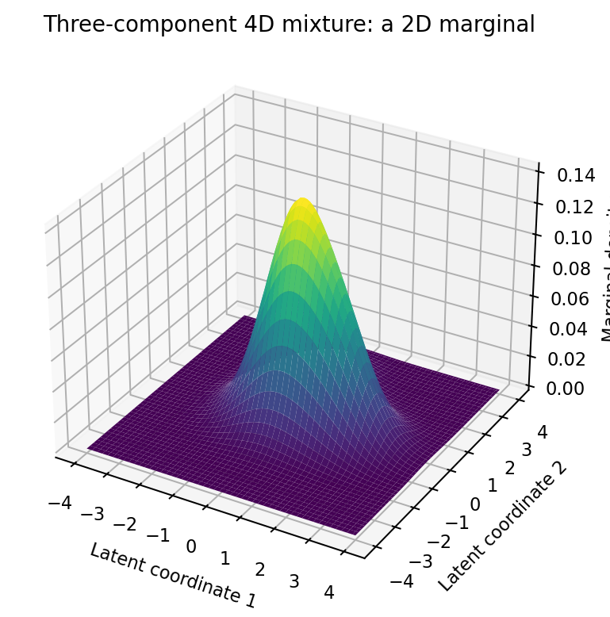
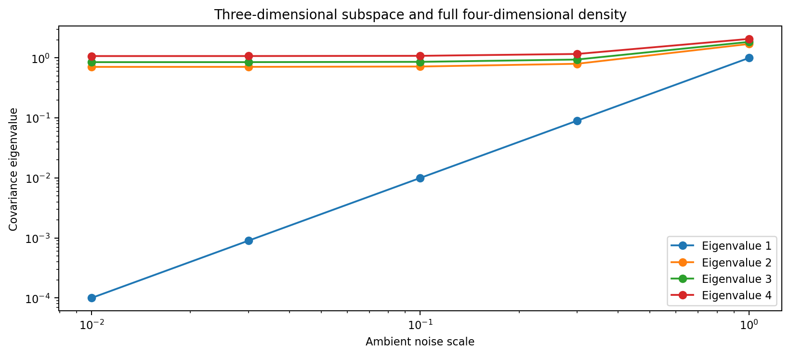

An Axiomatic and Numerical Approach to Modeling Bipolar Disorder
Michael Emanuel Glover · Developed in dialogue with Codex · 4 October 2026
A four-dimensional Gaussian-mixture proposal with projective geometry, formal proofs and synthetic calculations. It is an unvalidated research model, not a diagnostic or treatment tool.
From the manuscript
I propose a projective horizon: an observer-dependent view of a statistical landscape. My starting image is a hypergaussian field in four dimensions, with three components intended to separate self-directed harm-related content, other-directed harm-related content and a broader field of activation, appraisal and context. I want that image to become a mathematical object that can be checked, not merely a phrase that feels explanatory.

